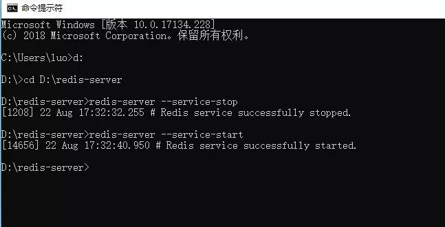
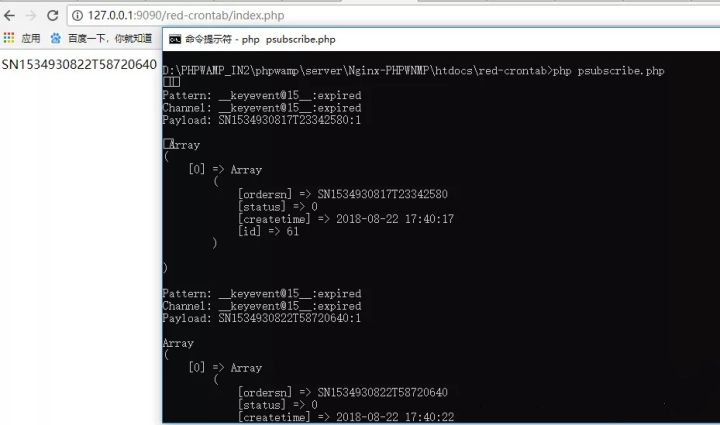

简单定时任务解决方案：使用redis的keyspace notifications（键失效后通知事件） ；
(A)业务场景：
1、当一个业务触发以后需要启动一个定时任务，在指定时间内再去执行一个任务（如自动取消订单，自动完成订单等功能）
2、redis的keyspace notifications 会在key失效后发送一个事件，监听此事件的的客户端就可以收到通知
(B)服务准备：
1、修改reids配置文件（redis.conf）【window系统配置文件为：redis.windows.conf 】
redis默认不会开启keyspace notifications，因为开启后会对cpu有消耗
备注： E：keyevent事件，事件以__keyevent@<db>__为前缀进行发布；
x：过期事件，当某个键过期并删除时会产生该事件；
原配置为：
notify-keyspace-events ""更改 配置如下：
notify-keyspace-events "Ex"保存配置后，重启Redis服务，使配置生效
1 [root@chokingwin etc]#
2 service redis-server restart /usr/local/redis/etc/redis.conf
3 Stopping redis-server: [ OK ]
4 Starting redis-server: [ OK ]
window系统重启redis ，先切换到redis文件目录，然后关闭redis服务（redis-server --service-stop），再开启（redis-server --service-start）

(C)文件代码：
phpredis实现订阅Keyspace notification,可实现自动取消订单，自动完成订单。以下为测试例子
创建4个文件，然后自行修改数据库和redis配置参数
db.class.php
1 <?php
2 class mysql
3 {
4 private $mysqli;
5 private $result;
6 /**
7 * 数据库连接
8 * @param $config 配置数组
9 */
10
11 public function connect()
12 {
13 $config=array(
14 'host'=>'127.0.0.1',
15 'username'=>'root',
16 'password'=>'168168',
17 'database'=>'test',
18 'port'=>3306,
19 );
20
21 $host = $config['host']; //主机地址
22 $username = $config['username'];//用户名
23 $password = $config['password'];//密码
24 $database = $config['database'];//数据库
25 $port = $config['port']; //端口号
26 $this->mysqli = new mysqli($host, $username, $password, $database, $port);
27
28 }
29 /**
30 * 数据查询
31 * @param $table 数据表
32 * @param null $field 字段
33 * @param null $where 条件
34 * @return mixed 查询结果数目
35 */
36 public function select($table, $field = null, $where = null)
37 {
38 $sql = "SELECT * FROM `{$table}`";
39 //echo $sql;exit;
40 if (!empty($field)) {
41 $field = '`' . implode('`,`', $field) . '`';
42 $sql = str_replace('*', $field, $sql);
43 }
44 if (!empty($where)) {
45 $sql = $sql . ' WHERE ' . $where;
46 }
47
48
49 $this->result = $this->mysqli->query($sql);
50
51 return $this->result;
52 }
53 /**
54 * @return mixed 获取全部结果
55 */
56 public function fetchAll()
57 {
58 return $this->result->fetch_all(MYSQLI_ASSOC);
59 }
60 /**
61 * 插入数据
62 * @param $table 数据表
63 * @param $data 数据数组
64 * @return mixed 插入ID
65 */
66 public function insert($table, $data)
67 {
68 foreach ($data as $key => $value) {
69 $data[$key] = $this->mysqli->real_escape_string($value);
70 }
71 $keys = '`' . implode('`,`', array_keys($data)) . '`';
72 $values = '\'' . implode("','", array_values($data)) . '\'';
73 $sql = "INSERT INTO `{$table}`( {$keys} )VALUES( {$values} )";
74 $this->mysqli->query($sql);
75 return $this->mysqli->insert_id;
76 }
77 /**
78 * 更新数据
79 * @param $table 数据表
80 * @param $data 数据数组
81 * @param $where 过滤条件
82 * @return mixed 受影响记录
83 */
84 public function update($table, $data, $where)
85 {
86 foreach ($data as $key => $value) {
87 $data[$key] = $this->mysqli->real_escape_string($value);
88 }
89 $sets = array();
90 foreach ($data as $key => $value) {
91 $kstr = '`' . $key . '`';
92 $vstr = '\'' . $value . '\'';
93 array_push($sets, $kstr . '=' . $vstr);
94 }
95 $kav = implode(',', $sets);
96 $sql = "UPDATE `{$table}` SET {$kav} WHERE {$where}";
97
98 $this->mysqli->query($sql);
99 return $this->mysqli->affected_rows;
100 }
101 /**
102 * 删除数据
103 * @param $table 数据表
104 * @param $where 过滤条件
105 * @return mixed 受影响记录
106 */
107 public function delete($table, $where)
108 {
109 $sql = "DELETE FROM `{$table}` WHERE {$where}";
110 $this->mysqli->query($sql);
111 return $this->mysqli->affected_rows;
112 }
113 }index.php
1 <?php
2
3 require_once 'Redis2.class.php';
4
5 $redis = new \Redis2('127.0.0.1','6379','','15');
6 $order_sn = 'SN'.time().'T'.rand(10000000,99999999);
7
8 $use_mysql = 1; //是否使用数据库，1使用，2不使用
9 if($use_mysql == 1){
10 /*
11 * //数据表
12 * CREATE TABLE `order` (
13 * `ordersn` varchar(255) NOT NULL DEFAULT '',
14 * `status` varchar(255) NOT NULL DEFAULT '',
15 * `createtime` varchar(255) NOT NULL DEFAULT '',
16 * `id` int(11) unsigned NOT NULL AUTO_INCREMENT,
17 * PRIMARY KEY (`id`)
18 * ) ENGINE=InnoDB AUTO_INCREMENT=27 DEFAULT CHARSET=utf8mb4;
19 */
20 require_once 'db.class.php';
21 $mysql = new \mysql();
22 $mysql->connect();
23 $data = ['ordersn'=>$order_sn,'status'=>0,'createtime'=>date('Y-m-d H:i:s',time())];
24 $mysql->insert('order',$data);
25 }
26
27 $list = [$order_sn,$use_mysql];
28 $key = implode(':',$list);
29
30 $redis->setex($key,3,'redis延迟任务'); //3秒后回调
31
32
33
34 $test_del = false; //测试删除缓存后是否会有过期回调。结果：没有回调
35 if($test_del == true){
36 //sleep(1);
37 $redis->delete($order_sn);
38 }
39
40 echo $order_sn;
41
42
43
44 /*
45 * 测试其他key会不会有回调，结果：有回调
46 * $k = 'test';
47 * $redis2->set($k,'100');
48 * $redis2->expire($k,10);
49 *
50 */
psubscribe.php
1 <?php
2 ini_set('default_socket_timeout', -1); //不超时
3 require_once 'Redis2.class.php';
4 $redis_db = '15';
5 $redis = new \Redis2('127.0.0.1','6379','',$redis_db);
6 // 解决Redis客户端订阅时候超时情况
7 $redis->setOption();
8 //当key过期的时候就看到通知，订阅的key __keyevent@<db>__:expired 这个格式是固定的，db代表的是数据库的编号，由于订阅开启之后这个库的所有key过期时间都会被推送过来，所以最好单独使用一个数据库来进行隔离
9 $redis->psubscribe(array('__keyevent@'.$redis_db.'__:expired'), 'keyCallback');
10 // 回调函数,这里写处理逻辑
11 function keyCallback($redis, $pattern, $channel, $msg)
12 {
13 echo PHP_EOL;
14 echo "Pattern: $pattern\n";
15 echo "Channel: $channel\n";
16 echo "Payload: $msg\n\n";
17 $list = explode(':',$msg);
18
19 $order_sn = isset($list[0])?$list[0]:'0';
20 $use_mysql = isset($list[1])?$list[1]:'0';
21
22 if($use_mysql == 1){
23 require_once 'db.class.php';
24 $mysql = new \mysql();
25 $mysql->connect();
26 $where = "ordersn = '".$order_sn."'";
27 $mysql->select('order','',$where);
28 $finds=$mysql->fetchAll();
29 print_r($finds);
30 if(isset($finds[0]['status']) && $finds[0]['status']==0){
31 $data = array('status' => 3);
32 $where = " id = ".$finds[0]['id'];
33 $mysql->update('order',$data,$where);
34 }
35 }
36
37 }
38
39 //或者
40 /*$redis->psubscribe(array('__keyevent@'.$redis_db.'__:expired'), function ($redis, $pattern, $channel, $msg){
41 echo PHP_EOL;
42 echo "Pattern: $pattern\n";
43 echo "Channel: $channel\n";
44 echo "Payload: $msg\n\n";
45 //................
46 });*/
47
Redis2.class.php
1 <?php
2
3 class Redis2
4 {
5 private $redis;
6
7 public function __construct($host = '127.0.0.1', $port = '6379',$password = '',$db = '15')
8 {
9 $this->redis = new Redis();
10 $this->redis->connect($host, $port); //连接Redis
11 $this->redis->auth($password); //密码验证
12 $this->redis->select($db); //选择数据库
13 }
14
15 public function setex($key, $time, $val)
16 {
17 return $this->redis->setex($key, $time, $val);
18 }
19
20 public function set($key, $val)
21 {
22 return $this->redis->set($key, $val);
23 }
24
25 public function get($key)
26 {
27 return $this->redis->get($key);
28 }
29
30 public function expire($key = null, $time = 0)
31 {
32 return $this->redis->expire($key, $time);
33 }
34
35 public function psubscribe($patterns = array(), $callback)
36 {
37 $this->redis->psubscribe($patterns, $callback);
38 }
39
40 public function setOption()
41 {
42 $this->redis->setOption(\Redis::OPT_READ_TIMEOUT, -1);
43 }
44
45 public function lRange($key,$start,$end)
46 {
47 return $this->redis->lRange($key,$start,$end);
48 }
49
50 public function lPush($key, $value1, $value2 = null, $valueN = null ){
51 return $this->redis->lPush($key, $value1, $value2 = null, $valueN = null );
52 }
53
54 public function delete($key1, $key2 = null, $key3 = null)
55 {
56 return $this->redis->delete($key1, $key2 = null, $key3 = null);
57 }
58
59 }
window系统测试方法：先在cmd命令界面运行psubscribe.php，然后网页打开index.php。3秒后效果如下

有个问题 做到这一步，利用 phpredis 扩展，成功在代码里实现对过期 Key 的监听，并在 psCallback()里进行回调处理。 开头提出的两个需求已经实现。 可是这里有个问题：redis 在执行完订阅操作后，终端进入阻塞状态，需要一直挂在那。且此订阅脚本需要人为在命令行执行，不符合实际需求。
实际上，我们对过期监听回调的需求，是希望它像守护进程一样，在后台运行，当有过期事件的消息时，触发回调函数。 使监听后台始终运行 希望像守护进程一样在后台一样，
我是这样实现的。
Linux中有一个nohup命令。功能就是不挂断地运行命令。 同时nohup把脚本程序的所有输出，都放到当前目录的nohup.out文件中，如果文件不可写，则放到<用户主目录>/nohup.out 文件中。那么有了这个命令以后，不管我们终端窗口是否关闭，都能够让我们的php脚本一直运行。
编写psubscribe.php文件：
1 <?php
2 #! /usr/bin/env php
3 ini_set('default_socket_timeout', -1); //不超时
4 require_once 'Redis2.class.php';
5 $redis_db = '15';
6 $redis = new \Redis2('127.0.0.1','6379','',$redis_db);
7 // 解决Redis客户端订阅时候超时情况
8 $redis->setOption();
9 //当key过期的时候就看到通知，订阅的key __keyevent@<db>__:expired 这个格式是固定的，db代表的是数据库的编号，由于订阅开启之后这个库的所有key过期时间都会被推送过来，所以最好单独使用一个数据库来进行隔离
10 $redis->psubscribe(array('__keyevent@'.$redis_db.'__:expired'), 'keyCallback');
11 // 回调函数,这里写处理逻辑
12 function keyCallback($redis, $pattern, $channel, $msg)
13 {
14 echo PHP_EOL;
15 echo "Pattern: $pattern\n";
16 echo "Channel: $channel\n";
17 echo "Payload: $msg\n\n";
18 $list = explode(':',$msg);
19
20 $order_sn = isset($list[0])?$list[0]:'0';
21 $use_mysql = isset($list[1])?$list[1]:'0';
22
23 if($use_mysql == 1){
24 require_once 'db.class.php';
25 $mysql = new \mysql();
26 $mysql->connect();
27 $where = "ordersn = '".$order_sn."'";
28 $mysql->select('order','',$where);
29 $finds=$mysql->fetchAll();
30 print_r($finds);
31 if(isset($finds[0]['status']) && $finds[0]['status']==0){
32 $data = array('status' => 3);
33 $where = " id = ".$finds[0]['id'];
34 $mysql->update('order',$data,$where);
35 }
36 }
37
38 }
39
40
41 //或者
42 /*$redis->psubscribe(array('__keyevent@'.$redis_db.'__:expired'), function ($redis, $pattern, $channel, $msg){
43 echo PHP_EOL;
44 echo "Pattern: $pattern\n";
45 echo "Channel: $channel\n";
46 echo "Payload: $msg\n\n";
47 //................
48 });*/
注意：我们在开头，申明 php 编译器的路径：
#! /usr/bin/env php
这是执行 php 脚本所必须的。
然后，nohup 不挂起执行 psubscribe.php，注意 末尾的 &
1 [root@chokingwin HiGirl]# nohup ./psubscribe.php &
2 [1] 4456 nohup: ignoring input and appending output to `nohup.out'
说明：脚本确实已经在 4456 号进程上跑起来。
查看下nohup.out cat 一下 nohuo.out，看下是否有过期输出：
1 [root@chokingwin HiGirl]# cat nohup.out
2 Pattern:__keyevent@0__:expired
3 Channel: __keyevent@0__:expired
4 Payload: name
运行index.php ，3秒后效果如上即成功
遇到问题：使用命令行模式开启监控脚本 ，一段时间后报错 ：Error while sending QUERY packet. PID=xxx
解决方法：由于等待消息队列是一个长连接，而等待回调前有个数据库连接，数据库的wait_timeout=28800，所以只要下一条消息离上一条消息超过8小时，就会出现这个错误，把wait_timeout设置成10，并且捕获异常，发现真实的报错是 MySQL server has gone away ， 所以只要处理完所有业务逻辑后主动关闭数据库连接，即数据库连接主动close掉就可以解决问题
yii解决方法如下：
Yii::$app->db->close();
查看进程方法：
ps -aux|grep psubscribe.php
a:显示所有程序
u:以用户为主的格式来显示
x:显示所有程序，不以终端机来区分
查看jobs进程ID：[ jobs -l ]命令
www@iZ232eoxo41Z:~/tinywan $ jobs -l
[1]- 1365 Stopped (tty output) sudo nohup psubscribe.php > /dev/null 2>&1
[2]+ 1370 Stopped (tty output) sudo nohup psubscribe.php > /dev/null 2>&1
终止后台运行的进程方法：
kill -9 进程号
清空 nohup.out文件方法：
cat /dev/null > nohup.out
我们在使用nohup的时候，一般都和&配合使用，但是在实际使用过程中，很多人后台挂上程序就这样不管了，其实这样有可能在当前账户非正常退出或者结束的时候，命令还是自己结束了。
所以在使用nohup命令后台运行命令之后，我们需要做以下操作：
1.先回车，退出nohup的提示。
2.然后执行exit正常退出当前账户。
3.然后再去链接终端。使得程序后台正常运行。我们应该每次都使用exit退出，而不应该每次在nohup执行成功后直接关闭终端。这样才能保证命令一直在后台运行。
很多PHPer在进阶的时候总会遇到一些问题和瓶颈，业务代码写多了没有方向感，不知道该从那里入手去提升，对此我整理了一些资料，包括但不限于：分布式架构、高可扩展、高性能、高并发、服务器性能调优、TP6，laravel，YII2，Redis，Swoole、Swoft、Kafka、Mysql优化、shell脚本、Docker、微服务、Nginx等多个知识点高级进阶干货需要的可以免费分享给大家，需要的加群（点击→）677079770